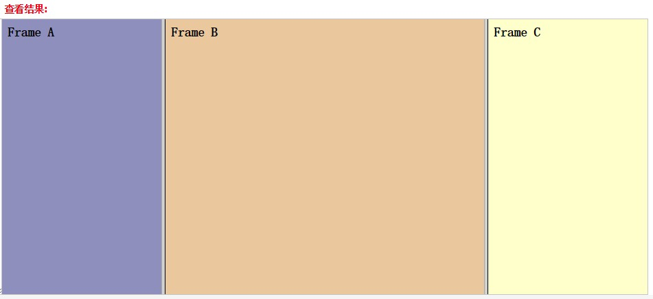

初级前端工程师掌握的技能
初级前端工程师应该具体的学习知识，要了解各种css的预处理器和后处理器， 还有会使用常见前端的MV*框架(angularjs, backbone，reactjs等等)并知道这些框架的原理，另外就是要熟练使用nodejs，要会使用基于node的各种前端构建工具 (grunt，gulp等等)，熟练使用github或gitlab，对模块化、组件化、工程化、语义化有一个比较深入的了解，最后要知道如何开发移动端 的页面，如何去优化一个页面的性能。
HTML+CSS+JS面试题目
1.HTML是什么意思？
A)高级文本语言
B)超文本标记语言
C)扩展标记语言
D)图形化标记语言
答案：
超文本标记语言
网页（WebPage）文件主要是用超文本标记语言（HyperText Markup Language，简称HTML）语句来写成。您可以通过IE浏览器的“查看”菜单中的“源文件”看到该页的HTML代码。HTML语言由一系列元素(element)组成，用于组织文件的内容和指导文件的输出格式。元素名称不分大小写。一个元素可以有多个属性，属性及其属性值不分大小写。属性名＝属性值合起来构成一个完整的属性，一个元素可以有多个属性，各个属性用空格分开。元素又由标记(tag)的构成，大多数标记是成对出现的，分起始标记 < >(start tag)和结尾标记(end tag)，以便和页面的内容区分开来。其写成的文件是标准的ASCII文件，不同于一般的编程语言，故称为脚本（Script）更准确一点。其实也很简单，特别是在专门的HTML编辑器的帮助下，您可以迅速地学会HTML，并能很快写出有自己特色的Homepage来。
2.在页面中看不见的表单元素是那种？
A) <input type="password"> </input>
B) <input type="radio"> </input>
C) <input type="hidden"> </input>
D) <input type="reset"> </input>
答案：
<inputtype="hidden"></input>
| 值 | 描述 |
|---|---|
| button | 定义可点击按钮（多数情况下，用于通过 JavaScript 启动脚本）。 |
| checkbox | 定义复选框。 |
| file | 定义输入字段和 "浏览"按钮，供文件上传。 |
| hidden | 定义隐藏的输入字段。 |
| image | 定义图像形式的提交按钮 |
| password | 定义密码字段。该字段中的字符被掩码。 |
| radio | 定义单选按钮。 |
| reset | 定义重置按钮。重置按钮会清除表单中的所有数据。 |
| submit | 定义提交按钮。提交按钮会把表单数据发送到服务器。 |
| text | 定义单行的输入字段，用户可在其中输入文本。默认宽度为 20 个字符。 |
3.我们在HTML页面中制作了一个图像，想要在鼠标指向这个图像时浮出一条提示信息，应该使用哪个参数做到？
A)POP
B)SRC
C)ALT
D)MSG
答案：
ALT
定义和用法

alt 属性是一个必需的属性，它规定在图像无法显示时的替代文本。
假设由于下列原因用户无法查看图像，alt 属性可以为图像提供替代的信息：
- 网速太慢
- src 属性中的错误
- 浏览器禁用图像
- 用户使用的是屏幕阅读器
img标签的 alt 属性指定了替代文本，用于在图像无法显示或者用户禁用图像显示时，代替图像显示在浏览器中的内容。
4.哪个标记用于表示HTML文档的结束？
A)/BODY
B)/HTML
C)/TABLE
D)/TITLE
答案：
/HTML
5.META元素的作用是什么？
A)META元素用于表达HTML文档的格式
B)META元素用于指定关于HTML文档的信息
C)META元素用于实现本页的自动刷新
D)以上都不对
答案：
META元素用于指定关于HTML文档的信息
- meta元素可提供有关页面的元信息（meta-information），比如针对搜索引擎和更新频度的描述和关键词。
- meta标签位于文档的头部，不包含任何内容。 标签的属性定义了与文档相关联的名称/值对
6.默认情况下，使用P标记会形成什么效果？
A)在文字P所在位置中加入8个空格
B)P后面的文字会变成粗体
C)开始新的一行
D)P后面的文字会变成斜体
答案：
开始新的一行
7.以下的哪一种颜色格式支持上百万种颜色，但是不支持无损压缩？
A)bmp
B)jpg
C)gif
D)tif
答案
bmp
BMP是英文Bitmap（位图）的简写，它是Windows操作系统中的标准图像文件格式，能够被多种Windows应用程序所支持。随着Windows操作系统的流行与丰富的Windows应用程序的开发，BMP位图格式理所当然地被广泛应用。这种格式的特点是包含的图像信息较丰富，几乎不进行压缩，但由此导致了它与生俱生来的缺点--占用磁盘空间过大。所以，目前BMP在单机上比较流行。
8.哪一个标记用于使HTML文档中表格里的单元格在同行进行合并？
A)cellspacing
B)cellpadding
C)rowspan
D)colspan
答案
colspan
- colspan 属性规定单元格可横跨的列数。
- rowspan 属性规定单元格可横跨的行数。
- cellspacing 属性规定单元格之间的空间。
- cellpadding 属性规定单元边沿与其内容之间的空白。
9.使用以下那一种元素可以将声音添加到网页里面？
A)sound
B)bgsound
C)music
D)voice
答案
bgsound
当音频被包含在网页中，或作为网页的一部份，它就被称为内联音频。
通过使用 bgsound 元素或 img 元素，可向网页添加内联音频。
10.以下HTML代码中，哪一个是将词语“Run Away Bride”显示为Verdana字体并且字号为5号的正确代码？
A) <font size=“5”font=“Verdana”>RunAway Bride </font>
B) <font size=“5”face=“Verdana”>RunAway Bride <font>
C) <font size=5 font=Verdana>“Run Away Bride” </font>
D) <font size=5 face=“Verdana”,text=“RunAway Bride”</font>
答案
<font size=“5”face=“Verdana”>RunAway Bride</font>
11.在<param>标签中，下列哪个属性用于给参数传递内容？
A)Address
B)Value
C)Amount
D)Method
答案
Value
value 属性为 input 元素设定值。
- type="button", "reset", "submit" - 定义按钮上的显示的文本
- type="text", "password", "hidden" - 定义输入字段的初始值
- type="checkbox", "radio", "image" - 定义与输入相关联的值
12.超链接不能链接到下列哪个位置？
A)同一HTML文档内的位置
B)磁盘上其他HTML文档
C)Internet上HTML文档
D)计算机，你与它之间没有通信链路
答案：
计算机，你与它之间没有通信链路
14.下列那项技术可以用于帮助网页设计时使页面具有统一、专业的外观？
A)HTML
B)DHTML
C)CSS
D)URL
答案：
CSS
15.Window对象是代表Internet Explorer窗口的对象，其属性、方法和事件可以不经限定就可以直接使用。比如Window.Alert“stop”也可以直接写成：Alert“stop”这种说法是正确的还是错误的？
A)正确
B)错误
答案：
正确
没有区别，你就认为alert = window.alert没什么区别，如果有人觉得有区别，那就来解释一下所有以window.开始的东西，都可以直接把window省略，只是有些变成软件在你写了window.的时候会自动的出现window的方法，所以如果你记得住完全没必要写window。比如location.href = window.location.href
16.浏览器针对于HTML文档起到了什么作用？
A)浏览器用于创建HTML文档
B)浏览器用于查看HTML文档
C)浏览器用于修改HTML文档
D)浏览器用于删除HTML文档
答案：
浏览器用于查看HTML文档
我们可以把浏览器看做是一个平台，浏览器的作用就是显示服务器解析后的网页文件内容。
17.以下哪一个项目是用来访问web页的软件？
A)OutlookExpress
B)Internet Explorer
C)QQ
D)FTP
答案：
Internet Explorer
18.哪条命令用于使一行文本折行，而不是插入一个新的段落？
A) <TD>
B) <P>
C) <BR>
D) <H1>
答案：
<BR>
br可插入一个简单的换行符。
<br> 标签是空标签（意味着它没有结束标签，因此这是错误的： <br> </br>）。在 XHTML 中，把结束标签放在开始标签中，也就是 <br />。
19.世界上最大的计算机网络是：
A)WWW
B)WAN
C)MAN
D)Internet
答案：
Internet
20.下面关于HTML说法错误的是？
A)HTML是一种标记语言
B)HTML可以控制页面和内容的外观
C)HTML文档总是静态的
D)文档是超文本文档
答案：
HTML可以控制页面和内容的外观
21.语句A：HTML文档必须包括“头”和“主体”两部分
语句B：HTML文档的扩展名为.htm或.html以下说法正确的是：
A)两句都对
B)两句都错
C)只有A对
D)只有B对
答案：
只有B对
1、.html与.htm均是静态网页后缀名，网页文件没有区别与区分，html与htm后缀网页后缀可以互换，对网页完全没有影响同时也没有区别。可以认为html与htm没有本质区别，唯一区别即多与少一个“L”。 2、定义：html,htm是一个完全的超文本静态网页——hypertext markup language shtml是一种用于SSI技术的文件——Server Side Include--SSI。 shtml是什么格式,比html有何好处? shtml,html格式是差不多，shtml主要可以使用include（包含html），经过服务器生成静态页面。 Shtml的页面可以使用include嵌入另外的html页面这样可以使得一个网站里共用相同办法分离出来使用include来嵌入到静态页面里。静态页面则不能。
22.以下哪个项目不是可以在HTML文档中使用的特殊字符。
A)>
B)&tl;
C)©
D)
答案：
&tl;
23.Html标记中，哪个标记表示表格？
A) <H1>
B) <TD>
C) <TABLE>
D) <TAB>
答案：
<TABLE>
24.Html标记中，用什么方法可以将整个表格在页面中居中？
A)place=middle
B)type=middle
C)align=center
D)type=center
答案：
align=center
25.我们想要让当前页面的背景色为蓝色，应该使用哪一句代码来描述此种设置？
A)bgcolor="blue"
B)bgground="blue"
C)backcolor="blue"
D)background="blue"
答案：
bgcolor="blue"
27.我们想要让表格的边框在页面中一定不显示出来，用什么方法可以做到呢？
A)bgcolor="white"
B)bgcolor="null"
C))border="0"
D)bordercolor="white"
答案：
border="0"
28.我们想要将表格的宽度设置为100个像素，应该怎么办？
A)width="100"
B)border="100"
C)length="100"
D)maxlength="100"
答案：
width="100"
29.我们想要将表格中的文字放在靠上居中的位置，应该怎么办？
A)align="middle"align="top"
B)align="center"align="top"
C)valign="middle"align="top"
D)valign="top" align="center"
答案：
valign="top" align="center"
30.我们想要为网页中的文字加上超链接，可以采用哪个标记达到要求？
A) <LINK>
B) <HREF>
C) <A>
D) <B>
答案：
<A>
31.A文件夹与B文件夹是同级文件夹，其中A下有a.htm，B下有b.htm文件，现在我们希望在a.htm文件中创建超链接，链接到b.htm，应该在a.htm页面代码中如何描述链接内容？
A)b.htm
B)././././B/b.htm
C)../B/b.htm
D)../../b.htm
答案：
../B/b.htm
32.我们想要在HTML文档中加入图像，可以使用哪个标记来达到要求呢？
A) <PIC>
B) <PICTURE>
C) <IMG>
D) <IMAGE>
答案：
<IMG>
33.我们发现为页面中的图像加入超链接后，默认情况下都带有一道黑框，有什么方法可以去掉它呢？
A)bordercolor="white"
B)border="0"
C)style="no border"
D)style="0"
答案：
border="0"
34.我们想要将表格中加入的图像充满整个单元格，使用哪种方式可以做到？
A)size="100"
B)size="100%"
C)width="100"
D)width="100%"
答案：
width="100%"
36.我们想要在框架中加入一个叫做list.htm的文件，应该在HTML中如何描述它？
A)frame page="list.htm"
B)frame target="list.htm"
C)frame src="list.htm"
D)frame framepage="list.htm"
答案：
framesrc="list.htm"
frame 标签定义 frameset 中的一个特定的窗口（框架）。
<frameset cols="25%,50%,25%">
<frame src="/example/html/frame_a.html">
<frame src="/example/html/frame_b.html">
<frame src="/example/html/frame_c.html">
</frameset>

37.我们想要在页面中加入一个层，可以使用哪些HTML标记来描述它？(选择2项)
A) <floor>
B) <div>
C)) <span>
D) <level>
答案：
<div>
38. 下面语句表述正确的是
A)marginwidth=5表示框架宽度部分边缘所保留的空间。
B)marginwidth=5表示框架宽度空间
C)noresize是设定不用使用框框的大小
D)noresize是使用者设定此参数后，可随意地拉动框架改变其大小。
答案：
marginwidth=5表示框架宽度部分边缘所保留的空间。
- marginwidth 属性规定框架内容与框架的左侧和右侧之间的高度，以像素计。
-
noresize 属性规定用户无法调整框架的大小。
默认地，可以通过拖动框架之间的“墙壁”来改变框架的大小，该属性可以锁定框架的大小。
39. 不是表单提供给用户的输入形式是
A)Text
B)Radio
C)Type
D)file
答案：
Type
40 . 下列哪种CSS样式定义的方式拥有最高的优先级？
A)嵌入
B)行内
C)链接
D)导入
答案：
行内
important > 内联 > ID > 类 > 标签/伪类/属性选择 > 伪对象 > 继承 > 通配符
41 .web标准的制定者是？
A)微软
B)万维网联盟（W3C）
C)网景公司（Netscape）
D)SUN公司
答案：
万维网联盟（W3C）
42 . 下列的HTML中哪个是最大的标题？
A) <h6>
B) <head>
C) <heading>
D) <h1>
答案：
<h1>
43 . 下列的HTML中哪个可以插入一条水平线？
A) <br>
B) <hr>
C) <break>
D) <P>
答案：
<hr>
44 . 下列的HTML中哪个可以添加背景颜色？
A) <body color="yellow">
B) <background>yellow
C) <body bgcolor="yellow">
D) <body backcolor="yellow">
答案：
<body bgcolor="yellow">
45 . 请选择产生粗体字的HTML标签：
A) <bold>
B) <bb>
C) <b>
D) <bld>
答案：
<b>文本加粗
46 . 请选择产生斜体字的HTML标签：
A) <i>
B) <italics>
C) <ii>
D) <it>
答案：
<i>标签显示斜体文本效果。
47 . 下列的HTML中哪个可以产生超链接？
A) <aurl="http://www.w3schools.com">W3Schools.com </a>
B) <a>http://www.w3schools.com </a>
C) <a href="http://www.w3schools.com">W3Schools </a>
D) <a>http://www.w3schools.com </a>
答案：
<a href="http://www.w3schools.com">W3Schools</a>
48 . 如何制作电子邮件链接？
A) <a href="xxx@yyy">
B) <mail href="xxx@yyy">
C) <a href="mailto:xxx@yyy">
D) <mail>xxx@yyy</ mail>
答案：
<a href="mailto:xxx@yyy">
49 . 如何在新窗口打开链接？
A) <a href="url" new>
B) <a href="url" target="_blank">
C) <a href="url" target="new">
D) <a href="url" target="_parent">
答案：
<a href="url" target="_blank">
50 .以下选项中，哪个全部都是表格标签？
A) <table> <head> <tfoot>
B) <table> <tr> <td>
C) <table> <tr> <tt>
D) <thead> <body> <tr>
答案：
<table><tr><td>
51 . 请选择可以使单元格中的内容进行左排列的正确HTML标签：
A) <td align="left">
B) <td valign="left">
C) <td leftalign>
D) <tdleft>
答案：
<td align="left">
52 . 如何产生带有数字列表符号的列表？
A) <ul>
B) <dl>
C) <ol>
D) <list>
答案：
<ol>
53 . 如何产生带有圆点列表符号的列表？
A) <dl>
B) <list>
C) <ol>
D) <ul>
答案：
<ul>
54 . 下列的HTML中哪个可以产生复选框？
A) <input type="check">
B) <checkbox>
C) <input type="checkbox">
D) <check>
答案：
<input type="checkbox">
55 . 下列的HTML中哪个可以产生文本框？
A) <input type="textfield">
B) <textinput type="text">
C) <input type="text">
D) <textfield>
答案：
<input type="text">
56 . 下列的HTML中哪个可以产生下拉列表？
A) <list>
B) <input type="list">
C) <input type="dropdown">
D) <select>
答案：
<select>
57 . 下列的HTML中哪个可以产生文本区？
A) <textarea>
B) <input type="textarea">
C) <input type="textbox">
D) <textarea> </textarea>
答案：
<textarea></textarea>
58 . 下列的HTML中哪个可以插入图像？
A) <img href="image.gif>
B) <image src=" image.gif ">
C) <img src="image.gif ">
D) <img>image.gif</img>
答案：
<img>image.gif</img>
60 . 以下的HTML中，哪个是正确引用外部样式表的方法？
A) <style src="mystyle.css ">
B) <link rel="stylesheet " type="text/css "href="mystyle.css ">
C) <stylesheet>mystyle.css</stylesheet>
答案：
<link rel="stylesheet " type="text/css "href="mystyle.css ">